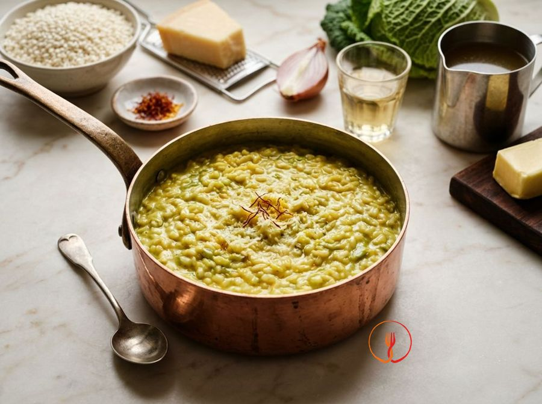

Creamy Risotto with Savoy Cabbage Cream and Saffron
A refined first course where the Savoy cabbage is transformed into a velvety cream that coats the rice, with a vibrant note of colour provided by the saffron.
Ingredients
- Carnaroli rice320 g
- Savoy cabbage500 g
- Saffron strands or powder1 sachet
- Shallot1
- Vegetable stock1.2 l
- Cold butter30 g
- Grated Parmigiano Reggiano50 g
- Dry white wine50 ml
- Extra virgin olive oilas required
Allergens
Milk
May contain traces of: Celery.
Method
- Begin by cleaning 500g of Savoy cabbage: remove the tougher central ribs and cut the leaves into rough strips. Drop them into a pot of lightly salted boiling water and cook over high heat for about 6-7 minutes. The leaves should be tender to the fork but still retain a vibrant green colour. Chef's tip: do not throw away the cooking water, as you can add it to your vegetable stock to intensify the dish's flavour.
- Drain the cabbage and immediately plunge it into a bowl of ice water to stop the cooking process and set the chlorophyll. Once cold, squeeze it gently and place it in a blender with a drizzle of extra virgin olive oil and a ladle of hot stock. Blend at maximum power until you achieve a very smooth, thick, emerald-green cream. A professional trick: if the cream still has fibrous residue, pass it through a fine-mesh sieve.
- Prepare the base by finely mincing one shallot and placing it in a wide saucepan with a splash of extra virgin olive oil. Let it soften over very low heat for about 5 minutes, adding a tablespoon of stock if you see it starting to brown too much. The shallot should become translucent and almost melt, releasing a sweet and delicate aroma without ever burning. Warning: patience at this stage ensures a perfect aromatic base that won't overpower the rice's flavour.
- Increase the heat to medium and pour 320g of Carnaroli rice into the pan for the toasting phase. Stir continuously with a wooden spoon for about 2 minutes until the grains become translucent at the edges and hot to the touch. You will smell a toasted nutty aroma and see the rice 'shine' thanks to the thin film of fat coating it. My advice: toast the rice until it's too hot to hold a grain between your fingers; this indicates the pores are sealed.
- Pour in 50ml of dry white wine at room temperature and let it evaporate over high heat. Keep stirring until you can no longer smell alcohol in the steam rising from the pan and the liquid has been completely absorbed by the rice. This step cleanses the palate and provides a crucial acidic note for the risotto's balance. Never use cold wine from the fridge, as it would cause thermal shock to the grains, breaking their structure.
- Start adding the 1.2L of boiling vegetable stock, one ladle at a time, just covering the rice. Maintain medium heat so that the simmer is constant but not violent, stirring regularly to encourage the release of starch. Wait until the liquid has been almost entirely absorbed before adding more, always keeping the rice 'all'onda' (wavy). Remember: the rice must never stop boiling, otherwise it will lose its optimal texture.
- At the halfway point of cooking, after about 8-9 minutes, stir in the previously prepared cabbage cream and the saffron dissolved in a splash of hot stock. Mix well to evenly distribute the golden hue and the green of the cabbage, creating an elegant and inviting chromatic shade. Continue cooking, adding stock only if necessary, until the rice is al dente. Chef's tip: add the saffron only towards the end to preserve its aroma and organoleptic properties intact.
- Turn off the heat when the rice is cooked but still firm, then add 30g of ice-cold butter from the fridge and 50g of grated Parmigiano Reggiano. Mantecate vigorously by moving the pan in a circular motion and stirring firmly to incorporate air and create a perfect emulsion between fats and starches. You will achieve a creamy, fluid consistency—the famous 'wave' effect. Essential: the butter must be freezing cold to create the thermal shock needed for superior creaminess.
- Cover the pan with a clean tea towel and let the risotto rest for one minute before serving. This brief step allows the flavours to stabilise and the temperature to distribute evenly throughout each grain. Serve the risotto on flat plates, tapping the bottom gently with the palm of your hand to spread it out evenly. The final touch: garnish with a few saffron pistils or a grind of fresh black pepper for an additional aromatic contrast.
Nutrition facts (estimate)
| Per serving (325 g) | Per 100 g | |
|---|---|---|
| Energy | 1946 kJ / 465 kcal | 598 kJ / 143 kcal |
| Protein | 11 g | 3.5 g |
| Carbohydrates | 68 g | 21 g |
| of which sugars | 2.1 g | 0.6 g |
| Fat | 14 g | 4.1 g |
| of which saturates | 6.9 g | 2.1 g |
| Fibre | 3.2 g | 1.0 g |
| Salt | 1.2 g | 0.4 g |
AI estimates based on average CREA / USDA data: indicative only, not a substitute for medical or dietitian advice.
Open the recipe in the app for the shopping list, ingredient sheets and nearby shops.